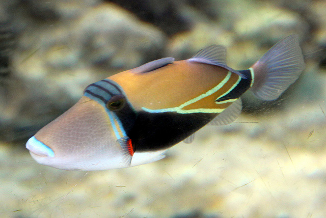

The reef triggerfish is generally found in shallow outer reef habitats. It feeds on algae, small crustaceans, worms, brittlestars, sea urchins, and snails.
Most triggerfish species are small and will face predation from a variation of species including larger fish species such as groupers, jacks, and even larger predatory fish like tuna that may visit the reefs.
Most reef triggerfish live up to 8 years in the wild and 20 years while living in captivity.